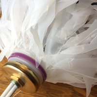
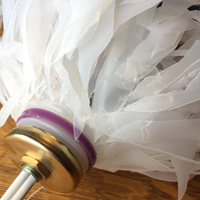
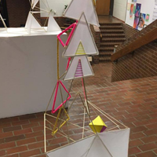
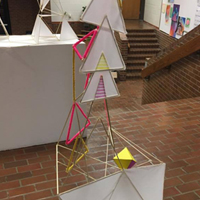

New Typography, Art Deco, Digital Aesthetic Poster // Type as Image
Ruins Menu Redesign // Spec Chic Logo Design
A collage created digitally in Photoshop using only scanned images. This piece is comprised of scans from a book about bugs, a book about sea creatures, and fabric from clothing I have in my closet.
A movie poster redesign for the X-Files movie using a pattern I created from scratch in Adobe Illustrator.
A lamp created using multiple recycled milk jugs that I cut into shreds using an x-acto knife. I wired the light bulb into this myself and it is fully functional.
A detail shot of the milk jug lamp showing the top part of the milk jug that served as a base for the lightbulb and how I glued the pieces onto it.
A sculpture created using bamboo skewers, colored string, cardstock colored with sharpie, and tracing paper that I drew on with sharpie as well.
A shot of the back of the bamboo skewer sculpture.
Inside the brochure I created about the Bookman typeface and its history, as well as the most popular examples of where it has been used.
Outside view of the Bookman brochure.
Poster combining three art movements into one visual: New Typography, Art Deco, and the Digital Aesthetic.
A poster created entirely out of type to create an image of a pineapple.
A VCD 1 project where we were tasked to redesign the menu for Ruins in Spokane, WA - my design was chosen to be sent to the owner for possible use.
Logo design for a classmate for her made up company Spec Chic, a place to buy modern, unique glasses.


 

 
